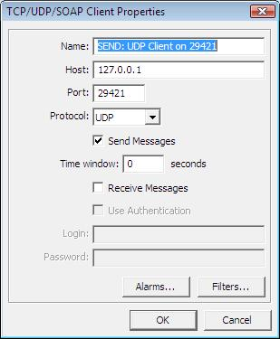
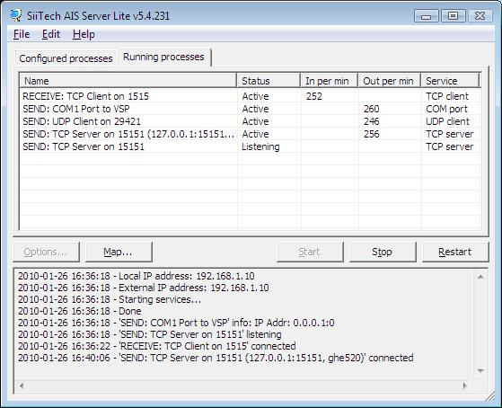

Introduction
Some confusion exists on how
to interface with SiiTech
Ais Server Lite, this page should help to clarify or just confuse.
Client-Server ?
TCP is a connection orientated
protocol. Handshaking between the sender and receiver ensures data sent
is actually received.
With TCP all communication is 2-way - like a phone call, and like a
phone call one party has to initiate the conversation. The party
initiating the conversation is the client, because the called party has
to react to a request made by the client (eg answer the phone call) and
then respond back to the caller ("Hello").
A program which receives data from one source and forwards it to
another can act as both a client and a server. It will initiate a
connection to start receiving data (ie is a client) than send this data
to another program if asked (ie is a server).
UDP is a connectionless protocol,
there is no handshaking, a packet sent is not guaranteed to be received.
It is like a broadcast radio signal - you don't have to listen to it.
Is the transmitter or the receiver the server ?
The answer appears to depend on your point of view. Microsoft clearly
regard the receiver as the client, however others
regard the receiver as the server because the program receiving the
data reacts to data initiated by the sender.
Clear as mud ?
Microsoft regard a UDP
receiver as a client, SiiTech regard a UDP receiver as a server.
My thanks to Chris Gray for the following information and Screen Shots
I setup a new UDP client in AIS Server Lite - screenshot at

I've got AIS Server Lite configured as per this screenshot -

I get AIS data from my own program, called sp2trax. This program creates
AIS NMEA messages based on the ships it can see in the ShipPlotter ship
list, using the OLE/COM interface. It outputs position reports every 10
seconds, ship name/destination/etc. every 6 minutes, SAR aircraft every 10
seconds, and Groundstations every 10 seconds.
I then use AIS Server Lite to send that data to:
1. COM1 serial port, via. VSP, for onward use in Airnav ShipTrax (beta
testing) to simulate hardware on COM2.
2. TCP server on port 15151, for use on my internal network where I have
another PC running ShipTrax configured for TCP input beta testing.
3. UDP client on port 29421 to send to your program.
Your program is proving useful to check what messages are being created by
sp2trax.
My thanks to Chris Gray for the information and Screen Shots